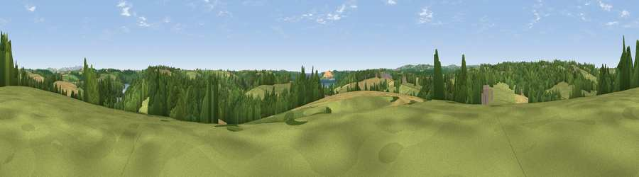

Viewpoint near Feock
#23083 in England · top 48% of its area beats it · near Feock · path 143 mWhere it is
The exact computed spot (SW 82675 39775). Click the marker for map links.
Public access: the nearest public right of way is about 143 m away — the final stretch may cross private land. Computed from Natural England's CRoW access layer and OpenStreetMap rights of way — not the legal definitive map. Always verify locally.
The view, rendered

A 360° render of this exact spot computed from the terrain model, tree cover and land cover — summer colours, afternoon light, calibrated against photographs of famous viewpoints. Real trees, hedges and buildings will differ in detail.
The panorama
Grey silhouette: terrain skyline in each direction (720 bearings, Earth curvature and refraction included). Dashed green: skyline with trees (+15 m) and buildings (+8 m) as obstacles. Blue strip: how far the ground is visible on each bearing.
Where the view opens
Wedge length = distance to the farthest visible ground on that bearing (vegetation-aware). Rings at 10, 25 and 50 km.
What fills the view
43% grassland · 34% woodland · 19% cropland · 3% water · 1% built-up
Angular shares of the visible panorama (visual magnitude), not map area. Landscape diversity 0.53 (0–1 Shannon).
Key numbers
More beautiful places nearby
The staircase of upgrades: each row has a higher view potential than everything closer. Driving times are estimates from straight-line distance, calibrated against real road routing — check an actual route before setting out.
| Place | Direction | Drive | Score |
|---|---|---|---|
| Viewpoint near Feock | SE · 2 km | ~6 min | 52.5 |
| Viewpoint near Mylor Churchtown | S · 5 km | ~12 min | 60.6 |
| Curgurrell Hill | ESE · 6 km | ~13 min | 71.5 |
| Drake's Downs | SSE · 9 km | ~17 min | 71.9 |
| Viewpoint near Lanner | W · 11 km | ~21 min | 74.5 |
| Carn Brea | W · 14 km | ~26 min | 81.1 |
| St Agnes Beacon | NW · 16 km | ~28 min | 86.1 |
| Viewpoint near Foxhole | NE · 21 km | ~35 min | 86.4 |
50.21797, -5.04774 · source: screening · position refined by local search. Computed location — check access rights before visiting.